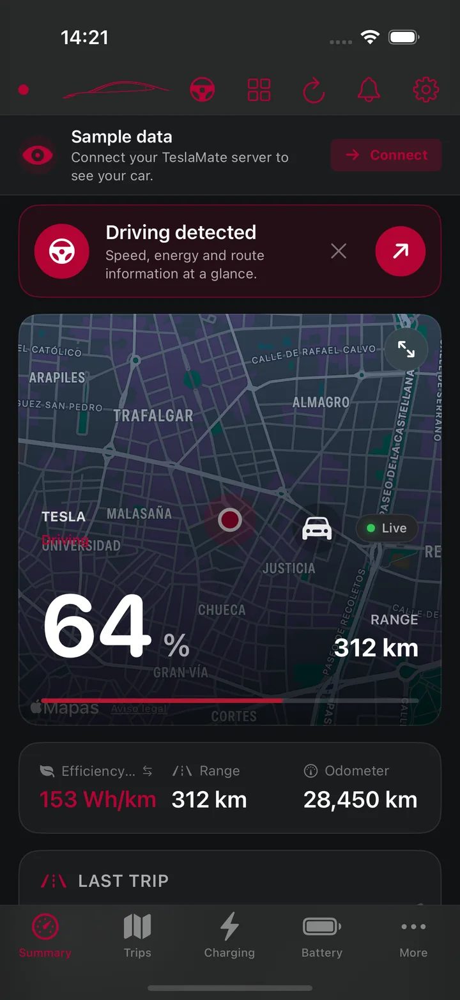
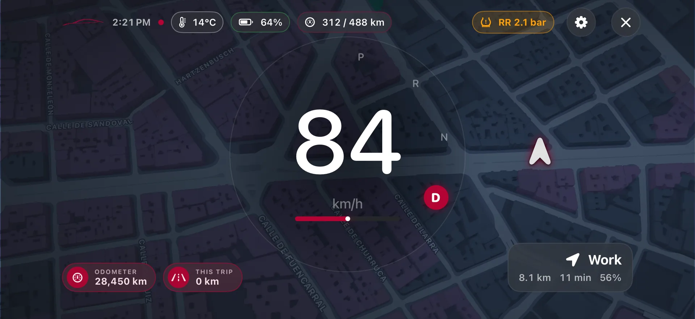
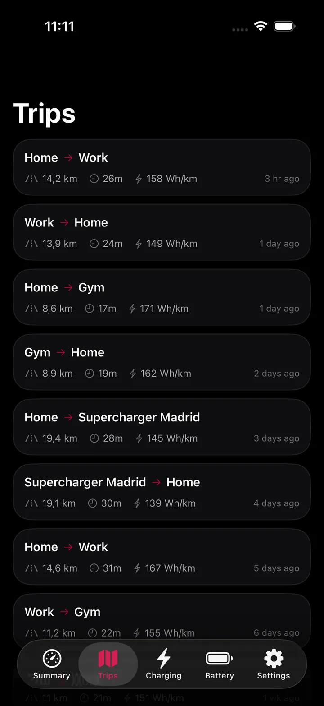
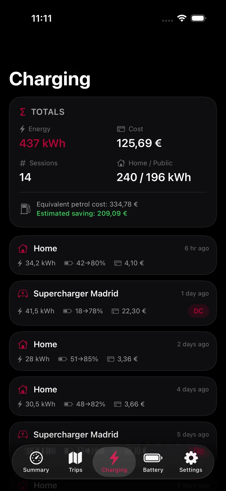
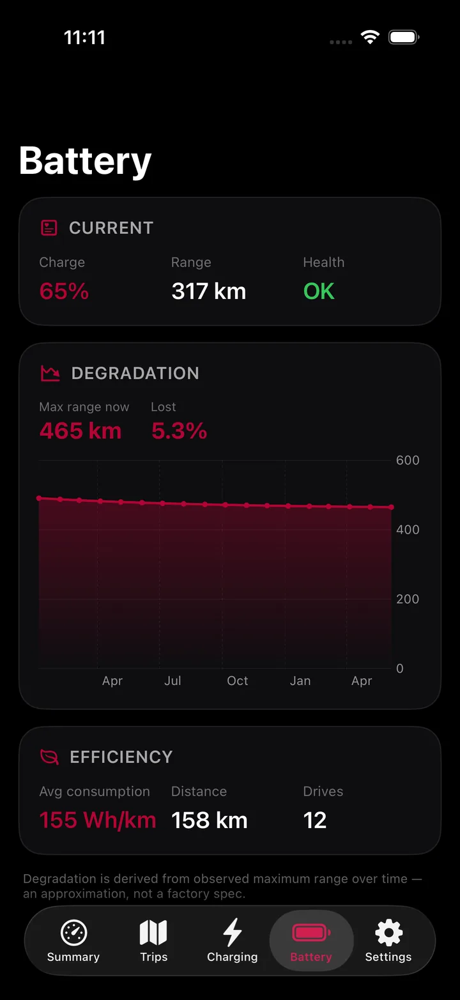
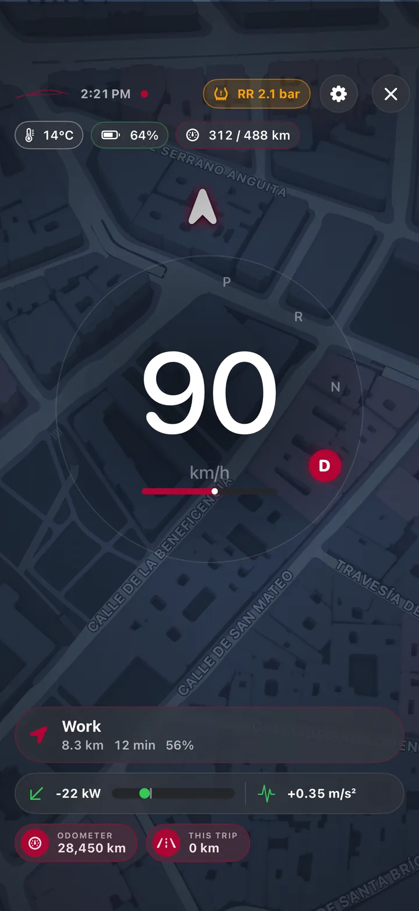
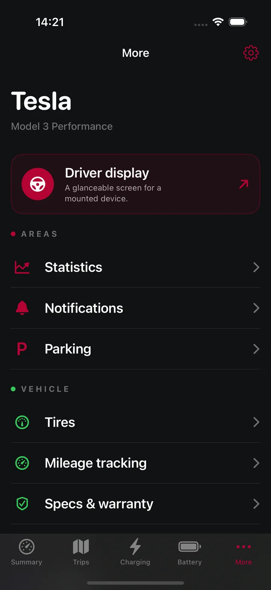

01
Live status
Know your car before you reach it.
Battery, range, charging power, climate, locks, Sentry, tire pressure, location, and route status stay together in one calm view.
Your car. Your data. Your screen.
Tesstats transforms the data from your own TeslaMate server into a live, private, and deeply useful driving companion.
Unofficial app. This project is an unofficial community tool and is not affiliated with, endorsed by, or supported by the official TeslaMate project. Tesstats is not related in any way to TeslaMate or Tesla, Inc. Read the disclaimer

One clear view
From a two second glance to a deep look at years of driving, Tesstats makes your own data feel immediate and human.
The whole car at a glance
See what is happening now, understand what happened before, and spot the patterns that help you drive and charge better.
Live status
Battery, range, charging power, climate, locks, Sentry, tire pressure, location, and route status stay together in one calm view.
Battery health
Follow estimated capacity, full range, degradation, recent levels, and charging history over time.
Trips
Open any trip for distance, time, consumption, route, and elevation. Tag it as work or personal, then filter and export it.
Charging
Track energy, cost, AC or DC sessions, location, and real charge curves. Add flat, location, or time based tariffs.
Deep insights
Compare months and years, find records, explore cost per 100 km, inspect phantom drain, and see how temperature changes consumption.
Driver Display
A focused full screen view that puts speed, battery, range, route context, gear, power, and the alerts that matter where your eyes can find them fast.

Large speed, clear gear, simple alerts, and a map that stays readable in portrait or landscape.
Choose a preset, change the theme and speed size, then reorder or hide each module before the drive.
Optional read only Bluetooth telemetry can improve speed, gear, power, and mileage. The app can fall back to iPhone GPS and TeslaMate automatically.
It is a supplemental display. It sends no vehicle controls and never invents navigation steps or driver assistance status.
Set up Driver Display before moving. Always use the vehicle controls and road signs as the primary source while driving.
Designed to feel at home
Every screen uses the same clear visual language, from a live summary to a deep charging session.
Drag to explore every screen





Real product captures with sample vehicle data.
More than an iPhone app
Useful details reach the screen that makes sense now, without turning into clutter.
Live Activity
See progress, power, and time remaining with support for Dynamic Island.
Apple Watch
The companion app keeps the essentials close across your Apple devices.
Widgets
Home Screen and Lock Screen widgets bring live status forward.
Mac
Keep battery and range visible while background notifications stay ready.
Siri and Shortcuts
Use actions like checking your battery without searching through screens.
Export
Export CSV, JSON, or GPX. Move settings with an encrypted backup.
Private by architecture
Tesstats connects directly to the server you choose. The project does not run an analytics cloud, an advertising system, or a vehicle data service.
Read the privacy policy ↗There is no separate sign in and no developer hosted profile for your vehicle.
Tesstats reads status and history. It does not unlock, start, move, or charge your car.
Server credentials stay in the Apple Keychain. Optional backups use password based AES 256 encryption.
Encrypted MQTT and HTTPS are the standard. Plain local HTTP needs a clear choice from you.
Simple architecture
Tesstats is an unofficial, independent client. It is not affiliated with, endorsed by, or related in any way to Tesla, Inc. or the TeslaMate project, and it contains no TeslaMate code.
Start your own dashboard
Set up TeslaMate on a computer, NAS, Raspberry Pi, or cloud server that you control.
TeslaMate setup ↗Give Tesstats encrypted access to MQTT for live data and TeslaMateApi for history.
Connection checklist ↗Choose your vehicle, units, tariffs, dashboard layout, alerts, and Driver Display modules.
Join on TestFlight ↗Good to know
No. Tesstats is read only. It does not include actions to unlock, start, move, charge, or change your vehicle.
No. Tesstats is an unofficial, independent app. It is not made, endorsed, or supported by the TeslaMate project or by Tesla, Inc., and it is not related to them in any way. It only reads the data that your own TeslaMate server already publishes. Please report Tesstats problems in the Tesstats issue tracker, never to the TeslaMate team.
Yes. The full source code is on GitHub under the GNU Affero General Public License v3.0 (AGPL-3.0).
Yes for your own live data. TeslaMate provides MQTT values and TeslaMateApi can add trips, charges, and long term history. You can use demo mode without a server.
No. The app connects to services you configure. The Tesstats project does not operate a tracking or vehicle data backend.
Tesstats supports iPhone and iPad on iOS 18 or later, plus Mac on macOS 15 or later. It also includes widgets and an Apple Watch companion.
No. It can show route context already present in the available data, but it does not provide turn instructions. Treat it as a supplemental display.
Use the Tesstats issue tracker for app issues. Use Tesla Support for Tesla accounts and vehicles. Use TeslaMate support for the TeslaMate server.
Your data already has a story
Private by design. Read only. Built for people who want their data to feel useful.